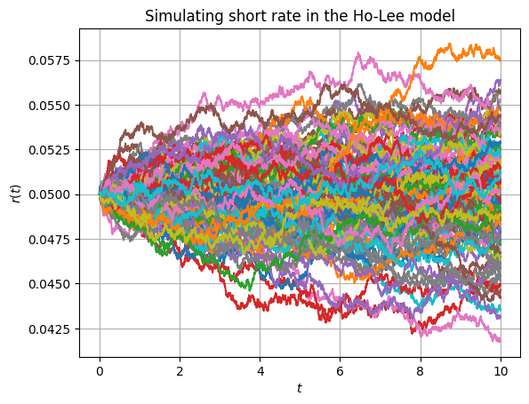
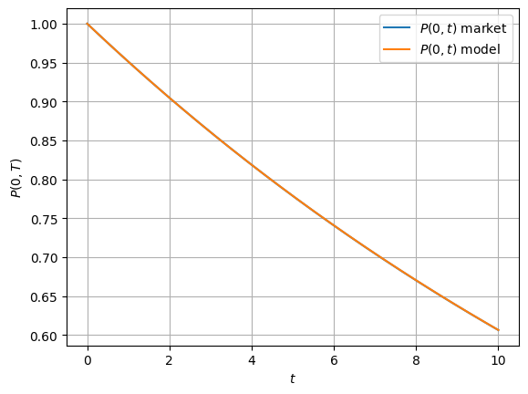

import numpy as np
import matplotlib.pyplot as plt
"""
Ho-Lee Model - Ensuring that model price of the ZCBs matches the market price
"""
# Discounting curve
def P(t,T):
r = 0.05
return np.exp(-r * (T-t))
class HoLee:
def __init__( self
,discountingCurve : np.array
,numOfSteps : int
,numOfPaths : int
,simulationCutoffDate : float
,sigma: float
):
self.discountingCurve = discountingCurve
self.numOfSteps = numOfSteps
self.numOfPaths = numOfPaths
self.T = simulationCutoffDate
self.sigma = sigma
def F0T(self, T : float):
dt = 0.0001
return -(np.log(P(0,T+dt)) - np.log(P(0,T-dt)))/(2 * dt)
def generatePaths(self):
dt = self.T / self.numOfSteps
timeGrid = np.linspace(dt, self.T, self.numOfSteps)
# Initial interest rate is a forward rate at time t -> 0
r0 = self.F0T(0.0) * np.ones([self.numOfPaths, 1])
theta = lambda t : (self.F0T(t + dt) - self.F0T(t - dt))/(2 * dt) + self.sigma**2 * t
theta = np.array([theta(t) for t in timeGrid])
theta = np.tile(theta, [self.numOfPaths,1])
dZt = np.random.standard_normal([self.numOfPaths, self.numOfSteps])
dWt = np.sqrt(dt) * dZt
dr_t = dt * theta + self.sigma * dWt
dr_t = np.concat([r0, dr_t], axis=1)
r_t = np.cumsum(dr_t, axis=1)
return r_t
# Price a ZCB in the Ho-Lee model, by computing expectations
# under the risk-neutral valuation formula
def ZCB(self, t1, t2, r_t : np.matrix):
idx_t1 = int(t1 * 365)
idx_t2 = int(t2 * 365)
dt = self.T / self.numOfSteps
return np.average(np.exp(np.sum([-(r_t[:,t] * dt) for t in range(idx_t1, idx_t2)], axis=0)))
T = 10.0 # Simulation cutoff time T in years
numOfSteps = int(365 * T) # Number of steps
numOfPaths = 100
timeGrid = np.linspace(0.0, T, numOfSteps + 1)
discountingCurve = np.array([P(0,t) for t in timeGrid])
# In this experiment we compare the ZCB from the market and Monte Carlo
engine = HoLee(
discountingCurve=discountingCurve,
numOfSteps = numOfSteps,
numOfPaths = numOfPaths,
simulationCutoffDate = T,
sigma = 0.001
)
paths = engine.generatePaths()
plt.xlabel(r'$t$')
plt.ylabel(r'$r(t)$')
plt.title(r'Simulating short rate in the Ho-Lee model')
plt.grid(True)
for path in paths:
plt.plot(timeGrid, path)
plt.show()

# Computing ZCB Model prices
ZCBPriceVector = np.array([engine.ZCB(0,T, paths) for T in timeGrid])
# Plot Discount curve and Model ZCB Prices
plt.close()
plt.xlabel(r'$t$')
plt.ylabel(r'$P(0,T)$')
plt.grid(True)
plt.plot(timeGrid, discountingCurve)
plt.plot(timeGrid, ZCBPriceVector)
plt.legend([r'$P(0,t)$ market', r'$P(0,t)$ model'])
plt.show()